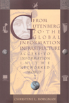

Titles by EPIC Advisory Board members
- Philip E. Agre: Technology and Privacy: The New Landscape
- Christine Borgman: From Gutenberg to the Global Information Infrastructure: Access to Information in the Networked World
- Bruce Schneier: Beyond Fear | Secrets & Lies
Technology and Privacy: The New Landscape
edited by Philip E. Agre and Marc Rotenberg
With contributions by Philip E. Agre, Victoria Bellotti, Colin J. Bennett, Herbert Burkert, Simon G. Davies, David H. Flaherty, Robert Gellman, Viktor Mayer-Schonberger, David J. Phillips, and Rohan Samarajiva.
"The erosion of privacy is of concern to all Americans. This book
provides a valuable framework for readers of many disciplines and will
clarify the issues we need to address."
- Caroline Kennedy, co-author of The Right to Privacy
List: $25.00 (Softcover), 280 pages; $45.00 (Hardcover), 325 pages. MIT Press, 1997.
Order Now through Powells.com!
From Gutenberg to the Global Information Infrastructure: Access to Information in the Networked World
by Christine L. Borgman
"A serious and multidimensional account of the challenge of connecting
people and information on global networks."
- Phil Agre, Department of Information Studies, University of California, Los
Angeles
List: $45.00 (Hardcover), 340 pages. MIT Press, 2000. ISBN: 026202473X
Order now through Powells.com!
Beyond Fear: Thinking Sensibly About Security in an Uncertain World
"This extraordinarily clear and powerful analysis by the leading
thinker in security of our time gives everyone — from policymakers
to citizens — a way of understanding, and resolving, one of the
mores important issues facing society today."
- Lawrence Lessig, Stanford Law School
List: $25.00 (Hardcover), 281 pages. Copernicus Books, 2003. ISBN: 0387026207
Order now through Powells.com!
Secrets & Lies: Digital Security in a Networked World
by Bruce Schneier
"...a clear, comprehensive guide that puts the wide range of
digital threats in context. The ultimate knowledgeable insider, Schneier
not only provides definitions, explanations, stories, and strategies,
but a measure of hope that we can get through it all."
- Steven Levy, author of Hackers and Insanely Great
List: $29.99 (Hardcover), 427 pages. Wiley Computer Publishing, 2000. ISBN: 0471253111
Order now through Powells.com!